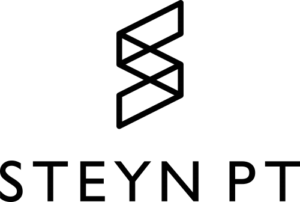

De nieuwe website · stappenplan in het kort

Alle stappen op één vel, met waar je ze doet. Vink elke stap af zodra hij klaar is. De commando's staan op de achterkant.
Voor je begint
steynpt-php-…zipDe huidige site blijft online; je kunt dit in delen doen.
DirectAdminGeavanceerde functies › SSH-Keys, dan inloggen
DirectAdminMySQL-beheer. Noteer naam, gebruiker en wachtwoord.
SSHDe hosting haalt het zelf op (uploaden kan maar tot 10 MB)
SSHEen programma stelt de vragen en zet alles klaar
DirectAdminGeavanceerde functies › Cronjobs, elke minuut
Kies een rustig moment; de site is hooguit even weg.
DirectAdminBack-up maken / herstellen
DirectAdmin.htaccess naast public_html
SSHDe oude site blijft bewaard als public_html-oud
Mijn VimexxDNS, als de oude site ergens anders stond
DirectAdminLet's Encrypt en Forceer SSL aan
WebsiteAccount van Steyn met de app (bewaar de herstelcodes), agenda en iCal, teksten NL/EN en een proefafspraak
/sitemap.xml)De oude site blijft bewaard. Met het commando op de achterkant (blok T) staat hij in een paar seconden weer online.
Achterkant · spiekbriefje

Vervang GEBRUIKER door je DirectAdmin-gebruikersnaam. Kopieer de grijze blokken en plak ze in de terminal; tekst na # is uitleg. Stappen die je alleen met de muis doet, staan op de voorkant.
ssh -o HostKeyAlgorithms=+ssh-rsa \
GEBRUIKER@steynpt.nl -p 7685
alias php=/opt/alt/php83/usr/bin/php
Typ de alias-regel na elke keer inloggen opnieuw.
De regel die het pakket ophaalt is te lang voor dit vel. Kopieer hem uit de afvinklijst (deel 6) of het uitgebreide stappenplan. Daarna:
cd ~/domains/steynpt.nl unzip -q steynpt-php-*.zip rm steynpt-php-*.zip
cd ~/domains/steynpt.nl/steynpt php artisan steynpt:installeren && php artisan optimize
| Adres van de website | Enter |
| Database: naam, gebruiker, wachtwoord | uit stap 2 (bij het wachtwoord zie je niets; dat is normaal) |
| E-mailadres van Steyn | Enter (steyn@steynpt.nl) |
| API-sleutel | plakken, of Enter voor later |
API-sleutel later toevoegen? Draai deze twee regels opnieuw; Enter houdt de rest.
/opt/alt/php83/usr/bin/php /home/GEBRUIKER/domains/steynpt.nl/steynpt/artisan schedule:run >/dev/null 2>&1
Controle via SSH: php artisan schedule:list toont vier taken.
.htaccess<FilesMatch "\.(php|phtml)$">
SetHandler application/x-lsphp83
</FilesMatch>
Staat er al een .htaccess met een andere x-lsphp-versie? Verander dan alleen dat getal in 83. In de klikbare handleiding staat een commando dat dit voor je doet.
cd ~/domains/steynpt.nl
[ -L public_html ] || mv public_html public_html-oud
[ -L public_html ] || ln -s steynpt/public public_html
ls -l public_html # -> steynpt/public
cd ~/domains/steynpt.nl [ -L public_html ] && rm public_html && mv public_html-oud public_html if [ -e .htaccess-oud ]; then mv .htaccess-oud .htaccess else rm -f .htaccess; fi
alias php=/opt/alt/php83/usr/bin/php
cd ~/domains/steynpt.nl
php steynpt/artisan steynpt:backup # eerst een back-up
unzip -q steynpt-php-*.zip -d nieuw && rm steynpt-php-*.zip
cp steynpt/.env nieuw/steynpt/.env && cp -a steynpt/storage/backups/. nieuw/steynpt/storage/backups/
rm -rf steynpt-vorige && mv steynpt steynpt-vorige && mv nieuw/steynpt steynpt && rmdir nieuw
cd steynpt && php artisan migrate --force && php artisan optimize
.htaccess) en stap 8.schedule:list.